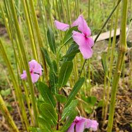
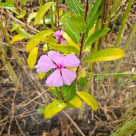
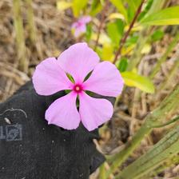

0–2
☀️ Open Cultivation2
species
2
plants counted
2m
length
🗒 Field observations for this section
2026-04-28
Details →
[FLAG invasive] Periwinkle (Vinca sp.) observed in this section. Submission 9f54b8c5 (Apr 24, Kacper) reported it as a "Periwinkle plant added... Source: Nursery" — but per Agnes's review (2026-04-29), this is the SAME volunteer/escapee ...
Submitted: 2026-04-24T05:02:00
Mode: inventory
Section notes: Periwinkle plant added in between the sunhemp. (Source: Nursery, photos included for identification. ) Unable to add as unknown or by species.



Submitted: 2026-04-24T05:02:00
Mode: comment
Section notes: Additional periwinkle observation: planned immediately next to the irrigation line.
Count: →

Submitted: 2026-03-17T06:42:00
Mode: section_observation
Section notes: look like a bunch of sun hemp
Medium Layer
2–8m
1

Planted towards the end of the section, vans from a late batch from the Nursery. Immediate neighbour is a radish.
Aromatic Mediterranean shrub with needle-like leaves. Drought tolerant once established. Blue flowers attract bees.
Secondary — Medium-term species that fill the canopy as pioneers decline
Field Guide
Edible leaves — harvest outer leaves, leave the crown to regrow
History
Apr 2026Observation›
Ground Layer
0–2m
1

planted Oct/Nov 2025
Deep-rooted nutrient accumulator bringing minerals from subsoil. Excellent for chop-and-drop mulching - produces massive biomass. Cut 4-5 times per season.
Secondary — Medium-term species that fill the canopy as pioneers decline
Field Guide
Biomass producer — prune regularly and use cuttings as mulch
Green Manure Cover Crop
Millet, Sunn Hemp, Zucchini (Blackjack)
Temporary cover crops planted for soil building and nitrogen fixation. Slashed and mulched every 2–3 months.
🌿 What is Syntropic Agriculture?
▾
Syntropic agriculture mimics natural forest ecosystems by layering plants at different heights. Instead of clearing land for monocultures, we build stacked polycultures where every species has a role — fixing nitrogen, producing biomass, attracting pollinators, or feeding people.